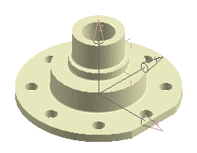
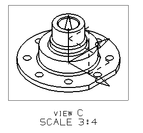

You need an isometric view on this drawing, but it must be somewhat smaller than the other views.
Because the designer wants to see the Datum Coordinate System in this particular model view, layer 61 needs to be visible before this view is created.

Add an isometric model view to the drawing.
Place it to the right of the TOP view.
Do not add centerlines.
Include a view label and a scale label.
Make the view 3/4 full size.
Include the datum coordinate system.
|
Tip |
You may need to manually adjust the view boundary to see all of the datum coordinate system. |
